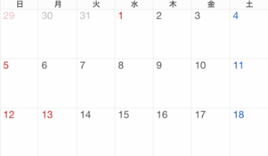

メルレを始めるにあたって
インスタグラムのストーリー機能を使って、皆さんの疑問や不安を集めました。
今日は、それに全てお答えします♡
🙋🏻そもそもメルレってなに？
メールレディ(通称:メルレ)は、お仕事です。
男性と、通話やメールをしてお金を頂きます。
出会い系サイトではありませんので、連絡先の交換、実際に会うことはできません。
(ハッピーメール等の出会い系サイトでもメルレがありますが、私が紹介しているものは出会い系サイトではありません。)
どこかに出勤することもないので、交通費はかかりません✨
スマホがあれば、誰でもできます。
技術や資格は必要ありません✨
慣れてくると短時間で報酬を得られます。
シフトも何もありません。空いてる時間に働いて、休みたいときに休めます✨
🙋🏻メルレを始められる年齢は？
アプリによって異なりますが、基本的に18歳か19歳からです。
18歳でも高校生はできません。
🙋🏻身分証は必要ですか？
必要です。
アプリの運営側は、「本当に女の子か？」「本当に18(19)歳以上か？」ということを確認しています😊
身分証を悪用されることは一切ありません。安心してくださいね♡
🙋🏻電話番号やメールアドレスの登録は必要？
必要ありません。
ですが、メールアドレス登録をしておくと、
・アプリを間違えて消してしまった
・携帯を変えた
ときに簡単にログインや引き継ぎができます。
メールアドレスは強制ではないので、登録は自由です。
🙋🏻個人情報の悪用が心配！
アプリの運営側が個人情報を悪用することはありません。
アプリ内で、自ら男性に教えない限り個人情報は漏れません。
メルレは、何年も前から存在するお仕事です。老舗と呼ばれるメルレアプリもあるくらいです。
運営側も、女の子がいなきゃ成り立たないですからね(´｡•ᵕ•`)੭
🙋🏻アプリ内での身バレは大丈夫？
身バレはまず無いと思ってください♡
男性も女の子たちもたくさんいますからね。
実際に登録してみて、知り合いに出会ったことは一度もありません。
それでも怖いという場合は、
・住みを他県にする
・アイコンの顔をださない
というように工夫してください♡
🙋🏻お金はどのように振り込まれまれるの？
銀行口座の登録をすると、2日後に振り込まれます♡
2日後とは、銀行営業日で数えます。
土日祝は営業していません。
例えば

2日(木)に精算をかけた場合、6日(月)に振り込まれます♡
10(金)に精算をかけた場合、15(水)に振り込まれます♡
お金が欲しい日に合わせて、精算をかけましょう😊
🙋🏻振込口座登録して大丈夫？
大丈夫です♡
4桁の暗証番号がない限り、お金を吸い取られることはありません。
🙋🏻通帳で親にバレたりしない？
まず、私が紹介しているアプリは「モア」「ベリー」「おチャベリ」「チャリン」の4つです。
「チャリン」は「スターダッシュ」という名前で振り込まれます。
それ以外の3つは同じ会社で「ネクシブ」という名前で振り込まれます。
「メルレ」という名前で振り込まれることはないので、安心してください♡
🙋🏻親や彼氏にバレたらなんて言うの？
私は、親にも彼にも説明してあります。
彼は、話をしっかり聴いてくれる人なので、普通に説明して許可してもらいました。応援してくれています。
親には「体調が悪いから働く時間を減らしたいけど、収入は減らしたくない。副業を少ししてる。男性とメールしてお金をもらってるんだけど、出会い系じゃないから。」と伝えました。
「メルレ」という言葉を使わないで説明することをオススメします♡
「メルレ」で検索されたときに、やっぱりマイナスなこともたくさん出てきますからね😅
ちゃんとしたお仕事だとしても、説明するのって勇気がいりますよね…
・彼氏さんと同棲してる
・旦那さんや子供さんがいる
・親さんと暮らしている
これらの場合は、いつかバレます😭
隠したり誤魔化したりする方が、誤解を招く結果になるかもしれません。
「メルレ」とは言わなくても、ちゃんと説明して安心してもらいましょう♡
メルレは出会い系じゃなくて、お仕事です。
最初は嫌がる旦那さんや彼氏さん、とても多いです。(逆の立場だったらなんとなく嫌ですよね😅)ですが、稼ぎ出すと応援してくれる男性も多いです( ˘ᵕ˘ )
🙋🏻変な写真って送られてくる？
ハッキリ答えます。
送ってくる男性もいます😔
さらにハッキリ答えます。
アプリ内の男性は、
「奥さんとレスになった」
「童貞卒業できていない」
「女の子と見せ合いしたい」
「見られたい」
要するに、アダルト目的がほとんどです😔
写真を送り付けられたら、トークは消せるので消しましょう！消したことは相手にわかりません。
初めは気持ち悪いですが、慣れてくると「無」になります。
女の子が自撮りを載せる自己顕示欲の度が過ぎたバージョンです…
お札だと思って耐えましょう😭笑
🙋🏻からだ見せてる？
見せてません。
アダルトな話はしますが、脱いだり身体をみせたりはしてないです👊🏻
アダルト対処法は無料、有料マニュアルに記載しています。
アダルト男性がほとんどですが、ノンアダでもちゃんと稼げます✨
ていうより、ノンアダのほうが絶対稼げます…
この理由はマニュアルで♡
🙋🏻顔みせてますか？
アイコンでは顔出ししていません。
ビデオ通話では、顔出しすることもあります。
「顔を見せた方が稼げる」ということではありません！見せたくない方は見せなくて大丈夫です。
🙋🏻女の子側の出費はある？
1円もかかりません。安心してください♡
登録する際も、辞める際もかかりません。
メルレはスマホとやる気があればできるので、他の仕事に比べて費用がかからないです✨
・交通費ゼロ
・すっぴんでもパジャマでもOK
最高ですね\(◡̈)/
🙋🏻報酬単価が知りたい！
報酬単価はアプリによって様々です。
「単価が高いから稼げる」という訳ではありません。
最低単価を載せておきます♡
メール1通受信：10円
音声通話1分：40円
ビデオ通話1分：60円
🙋🏻初心者オススメのアプリは？
「モア」と「チャリン」です♡
「モア」は登録者数が業界一多いです。
色んなタイプの男性がいるので、稼ぎやすいです♡
「チャリン」は最近出来たばかりのアプリです。
男性の登録者がグーンと増えています。女の子のライバルが少ないので比較的稼ぎやすいです♡
🙋🏻いくら稼げる？
最高時給は4,000円弱くらいです♡
ただ、これは人によって稼ぎ方が違うので、ハッキリは答えられません。
💌メールのみで稼ぐなら1通10円なので、100通受信で1,000円ですよね。
📞音声通話は1分40円なので、1時間で2,400円になります。
📹ビデオ通話は1分60円なので、1時間で3,600円になります。
※最低単価の場合で計算しています。アプリによって単価は違います。
ちなみに私は「ビデオ90円イベント」のとき、2時間で12,000円稼ぎました♡
時給6,000円です。1時間でパートやアルバイトの日給が稼げるって夢がありますよね😭✨
メールのみの稼働で1日に1万円稼いでいる主婦の方もいます。
音声やビデオなどの通話をすれば、もっと効率よく稼げます。
いくら稼ぎたいかによって、稼ぎ方も見えてくると思います😊
努力したぶん稼げます。
🙋🏻無料マニュアルについて知りたいです
名前の通り、無料のマニュアルです♡笑
無料なので、私が稼げるようになった"全て"の知識を詰め込んだわけではありません。
あなたがメルレを始めたとき、無知では厳しいと思います。(私も厳しかったです😑笑)なので基礎をとにかく詰め込みました。
無料マニュアルを読んで、4時間やりこんだEさんは9,000円稼いでいました😭✨シンプルにすごいです…
🙋🏻終わりに
私は2018年9月にメルレを始めました。
最初はまったく稼げず、「こういうのはこんなもんだよな」と思いました😔
けれど体調が悪かった私は、
「短時間」で「家」で「隙間時間」で稼ぐしかありませんでした。
半年かけて、やっと稼げるようになりました。どんな仕事でも、稼げないと楽しくないですよね😔
あなたがメルレを始めたとき、
「嫌にならないように」
「稼げるように」
「大切な身体をみせたりしないように」
無料マニュアルを作りました。
この入門編を読んで、メルレを登録された方は@pupipe_eのDMにてご連絡お願いします。
無料マニュアルを送ります♡